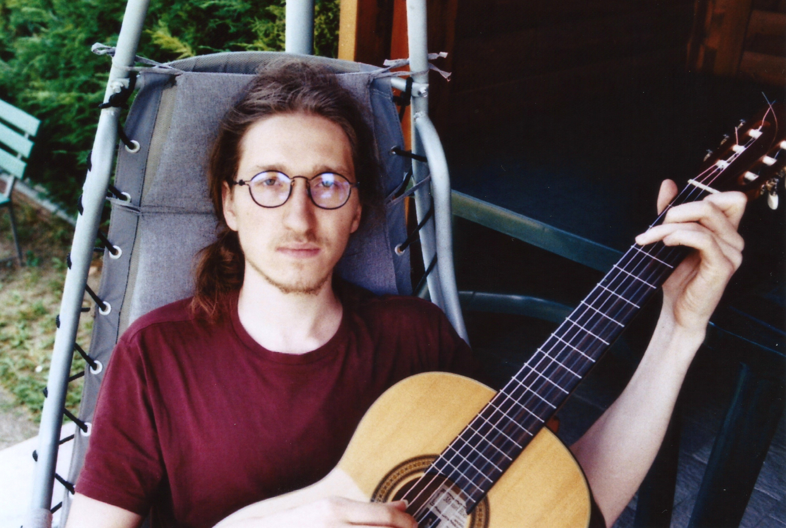

Davide Davoli
PhD student
Centre Inria d'Université Côte d'Azur Building Fermat, F113 2004, Route des Lucioles - BP 93 06902 Sophia Antipolis Cedex, France (λxy.davideydavolixinriayfr) @ .

About
I am a PhD student of the SPLITS team at the Centre Inria d'Université Côte d'Azur, and I got my MSc in Computer Science at the University of Bologna in 2022. My main research interest lies in the application of formal methods to study the interactions of randomized computation and security.
Publications
Conference and journal papers
Please wait while the bibliography is loading...
Technical reports and pre-prints
Please wait while the bibliography is loading...
Talks
- A quantitative probabilistic relational Hoare logic, POPL 2025, slides.
- On Kernel’s Safety in the Spectre Era (And KASLR is Formally Dead), CCS 2024, slides.
- On Separation Logic, Computational Independence, and Pseudorandomness, PLAS 2024, slides.
- On Separation Logic, Computational Independence, and Pseudorandomness, CSF 2024, slides.
- On Kernel’s Safety in the Spectre Era, 2024 Annual Meeting of the WG "Formal Methods in Security", slides.